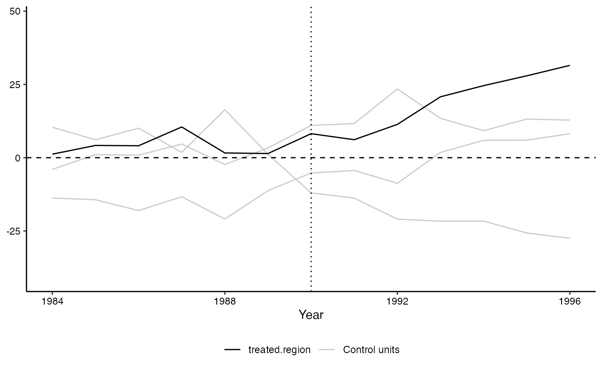

plot_placebos.RdCreates plots with the difference between observed units and synthetic controls for the treated and control units. See Abadie, Diamond, and Hainmueller (2011).
plot_placebos(tdf = tdf, discard.extreme = FALSE, mspe.limit = 20, xlab = NULL, ylab = NULL, title = NULL, alpha.placebos = 1, ...)
| tdf | An object with a list of outcome values for placebos,
constructed by |
|---|---|
| discard.extreme | Logical. Whether or not units with high pre-treatement
MSPE should be excluded from the plot. Takes a default of |
| mspe.limit | Numerical. Used if |
| xlab | Character. Optional. Label of the x axis. |
| ylab | Character. Optional. Label of the y axis. |
| title | Character. Optional. Title of the plot. |
| alpha.placebos | the transparency setting, default of |
| ... | optional arguments (currently not used) |
## First prepare the required objects # Load simulated data from Synth library(Synth) data(synth.data) # Execute dataprep to produce the necessary matrices for synth dataprep.out<- dataprep( foo = synth.data, predictors = c("X1", "X2", "X3"), predictors.op = "mean", dependent = "Y", unit.variable = "unit.num", time.variable = "year", special.predictors = list( list("Y", 1991, "mean"), list("Y", 1985, "mean"), list("Y", 1980, "mean") ), treatment.identifier = 7, controls.identifier = c(29, 2, 13, 17, 32, 38), time.predictors.prior = c(1984:1989), time.optimize.ssr = c(1984:1990), unit.names.variable = "name", time.plot = 1984:1996 ) # run the synth command to create the synthetic control synth.out <- synth(dataprep.out)#> #> X1, X0, Z1, Z0 all come directly from dataprep object. #> #> #> **************** #> searching for synthetic control unit #> #> #> **************** #> **************** #> **************** #> #> MSPE (LOSS V): 4.714688 #> #> solution.v: #> 0.00490263 0.003884407 0.1972011 0.2707289 0.0007091301 0.5225738 #> #> solution.w: #> 0.0001407318 0.004851527 0.1697786 0.2173031 0.6079231 2.9419e-06 #>## run the generate.placebos command to reassign treatment status ## to each unit listed as control, one at a time, and generate their ## synthetic versions. tdf<-generate.placebos(dataprep.out,synth.out)#> #> X1, X0, Z1, Z0 all come directly from dataprep object. #> #> #> **************** #> searching for synthetic control unit #> #> #> **************** #> **************** #> **************** #> #> MSPE (LOSS V): 1.919039 #> #> solution.v: #> 4.26e-08 0.3314532 2.50708e-05 0.273401 0.1669915 0.2281292 #> #> solution.w: #> 0.05832822 0.5057193 0.001459438 0.432908 0.00158504 #> #> #> X1, X0, Z1, Z0 all come directly from dataprep object. #> #> #> **************** #> searching for synthetic control unit #> #> #> **************** #> **************** #> **************** #> #> MSPE (LOSS V): 2656.617 #> #> solution.v: #> 0.05378089 0.03614492 0.1033622 0.3066906 0.1146891 0.3853323 #> #> solution.w: #> 5.5359e-06 6.589e-07 0.2873189 0.7126745 3.908e-07 #> #> #> X1, X0, Z1, Z0 all come directly from dataprep object. #> #> #> **************** #> searching for synthetic control unit #> #> #> **************** #> **************** #> **************** #> #> MSPE (LOSS V): 4.417489 #> #> solution.v: #> 4.16708e-05 2.2374e-06 0.0002522976 0.312786 0.3920212 0.2948966 #> #> solution.w: #> 0.2640319 0.05262123 0.000396628 0.001012998 0.6819372 #> #> #> X1, X0, Z1, Z0 all come directly from dataprep object. #> #> #> **************** #> searching for synthetic control unit #> #> #> **************** #> **************** #> **************** #> #> MSPE (LOSS V): 93.9186 #> #> solution.v: #> 0.3067778 0.01604218 0.01562176 0.006057079 0.5752435 0.08025769 #> #> solution.w: #> 1.7048e-06 0.2398606 0.7601323 2.138e-06 3.2977e-06 #> #> #> X1, X0, Z1, Z0 all come directly from dataprep object. #> #> #> **************** #> searching for synthetic control unit #> #> #> **************** #> **************** #> **************** #> #> MSPE (LOSS V): 6.180212 #> #> solution.v: #> 0.0002384139 0.02854083 3.08429e-05 0.8305712 0.1359355 0.00468322 #> #> solution.w: #> 0.5634249 0.1701299 3.351e-07 0.0002552697 0.2661896 #> #> #> X1, X0, Z1, Z0 all come directly from dataprep object. #> #> #> **************** #> searching for synthetic control unit #> #> #> **************** #> **************** #> **************** #> #> MSPE (LOSS V): 61.19353 #> #> solution.v: #> 0.01419207 6.4e-08 0.0178097 0.187153 0.5235156 0.2573296 #> #> solution.w: #> 5.17837e-05 1.4881e-06 0.9998792 4.41379e-05 2.33603e-05 #>## Plot the gaps in outcome values over time of each unit -- ## treated and placebos -- to their synthetic controls p <- plot_placebos(tdf,discard.extreme=TRUE, mspe.limit=10, xlab='Year')#> Warning: Recycling array of length 1 in vector-array arithmetic is deprecated. #> Use c() or as.vector() instead.p